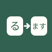

NIhongo-Doushi · Android 答题界面重设计
选择题答题界面 · 三版原型
三个方案都已接入真实题目与判题逻辑：点击任一选项即判题，正确项绿、误选红并揭晓正确答案，随后可进入下一题。 题目与答案取自 web/verb-engine.js / adjective-engine.js 的实际输出（非手写猜测），干扰项按“常见误形优先”策略编排。
未作答
答对
答错
正确答案揭晓
键盘 1–4 可选，Enter 进下一题
方案 A · 纸卡竖排 稳妥·单手
选项纵向整宽，点击热区最大；反馈卡在选项下方原位展开，阅读动线自上而下，不改动现有信息结构。
方案 B · 双列网格 紧凑·现代
2×2 选项网格 + 顶部统计卡，一屏信息密度最高，短选项（多为 3–5 字）辨识快；适合连续刷题的熟练期。
0
答对
0
答错
—
正确率
方案 C · 沉浸题卡 + 底部判定抽屉 专注·大反馈
上半屏只留题面（大留白、装饰图形），选项紧凑成行；判题后从底部上滑判定抽屉承载完整反馈，刷题节奏最连贯。
统一改进要素（三版共用）
针对“界面单调”的四条具体手段：把纯文字统计换成可视状态、把状态差异做成颜色与图标的双通道、给卡片建立三级层次、用楷体大字做题面焦点。
1 · 进度可视化
顶部进度环显示本轮完成度，替代原先无进度感知的随机练习；正确率并入环下方文字，减少一次视线跳转。
2 · 三级层次
纸底（页面）→ 纸白卡（题面/选项）→ 淡绿淡橙（强调/目标），卡片统一 16px 圆角与极轻投影，杜绝“一片平面”。
3 · 选项三态
颜色（绿/红）+ 图标（勾/叉）+ 边框（实线/虚线）三重区分，色觉障碍下仍可判读。
动效规范：卡片入场 translateY(6px) → 0 · 220ms，选项着色 130ms，抽屉上滑 220ms；统一缓动
cubic-bezier(0.22, 0.61, 0.36, 1)，禁用弹跳曲线。距离与时长均小于 260ms，连续答题不产生等待感。
应用图标 · 三个方向
统一风格：扁平矢量、圆角几何、纸感双色（墨绿 / 纸白，朱红仅用于印章方向）；108dp 画布、内容收在中央 66dp 安全区内，适配圆形、圆角方、方形（squircle）三种系统遮罩。
方向 1 · あ・纸页
假名 + 纸感隐喻，最贴近现有品牌纸感
圆形
圆角方
squircle
あ
あ
单色主题图标（Android 13+）可直接取「あ」字形，无需另绘
方向 2 · る → ます
直接表达“动词变形”，语义唯一性最强

圆形
圆角方
squircle
る→
る→
满底深色在圆形遮罩下最饱满，放大到桌面图标仍清晰
方向 3 · 朱印
日语印章语言，有手作温度与识别度
圆形
圆角方
squircle
あ
あ
朱红沿用应用“答错”语义色，与内页配色同源不打架
落地要点：正式使用时需把字形转为轮廓路径（当前 SVG 用的是系统字体渲染，不同设备字形会漂移）；
自适应图标拆为 前景层（字形，透明底） + 背景层（纯色或纸纹），并按 108dp 画布出 PNG/VectorDrawable 各一套。